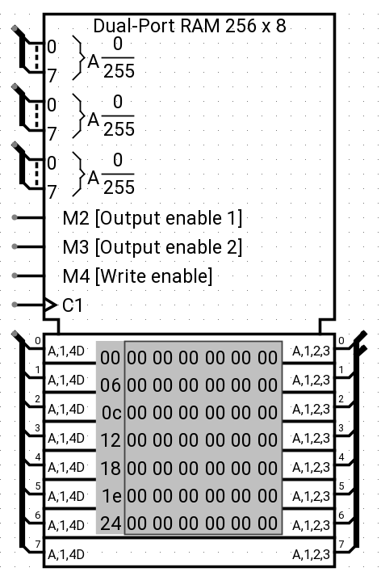
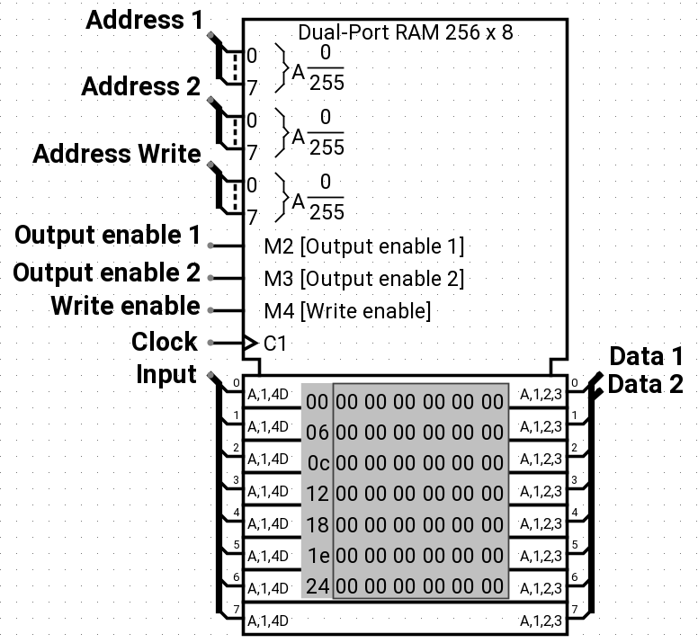

Dual-Port RAM
Dual-Port RAM
| Library: | Memory |
| Introduced: | T.B.D. |
| Appearance: |  |
Behavior
The Dual Port RAM component is a special memory component that behaves similarly to the RAM, storing up to 16,777,216 values (specified in the Address Bit Width attribute), each of which can include up to to 32 bits (specified in the Data Bit Width attribute). The key difference from the RAM memory component is that the Dual Port RAM, as its name implies, has 2 load ports and 1 write port, which allows the circuit to read 2 memory addresses and at the same time write to one memory address. The user can also modify individual values interactively via the Poke Tool, or alternatively modify the entire contents via the Menu Tool.
Just like the RAM component, the current values are displayed on it. Addresses displayed are listed in gray to the left of the display area. Inside, each value is listed using hexadecimal. The value at the currently selected address will be displayed in inverse text (white on black).
-
 -
Pins
- Address 1 on west edge (input, bit width matches Address Bit Width attribute)
- Selects which of the values in memory is currently being read by the circuit to be output into Data 1.
- Address 2 on west edge (input, bit width matches Address Bit Width attribute)
- Selects which of the values in memory is currently being read by the circuit to be output into Data 2.
- Address Write on west edge (input, bit width matches Address Bit Width attribute)
- Selects which of the values in memory is currently going to be written to by the circuit.
- Output/Line Enable 1 on west edge (input, bit width 1)
- Selects whether the Dual Port RAM should emit on Data 1 the value at the address selected in Address 1.
- Output/Line Enable 2 on west edge (input, bit width 1)
- Selects whether the Dual Port RAM should emit on Data 2 the value at the address selected in Address 2.
- Write Enable on west edge (input, bit width 1)
- Selects whether the Dual Port RAM should write the value specified in Input at the address selected in Address Write.
- Input on west edge (input, bit width matches Data Bit Width attribute)
- If Clock and/or (depending whether the Clock pin is present or not) Write Enable are 1 or floating, the value read from this port is stored into the address selected in Address Write whenever it's requested.
- C1/Clock on west edge (input, bit width 1)
-
This pin is absent when the Trigger attribute's value is "High Level" or "Low Level". The value at the address selected in Address Write changes to whatever value is at the Input pin, conditional to the Trigger attribute:
If the Trigger attribute's value is "Rising Edge" then this input must rise from 0 to 1 in order for the value to be written.
If the Trigger attribute's value is "Falling Edge" then this input must fall from 1 to 0 in order for the value to be written.
As long as the clock input remains 0 or 1, though, the Input value will not be stored into memory.
- Clear on north edge (input, bit width 1)
- This pin is present when the "Use clear pin" attribute's value is "Yes". When this pin is 1, all values in memory are pinned to 0, no matter what the other inputs are.
- Data 1 on east edge (output, bit width matches Data Bit Width attribute)
- If Clock and/or (depending whether the Clock pin is present or not) Output/Line Enable 1 are 1 or floating, then the Dual Port RAM emits in this pin the value in memory read from the address selected in Address 1.
- Data 2 on east edge (output, bit width matches Data Bit Width attribute)
- If Clock and/or (depending whether the Clock pin is present or not) Output/Line Enable 2 are 1 or floating, then the Dual Port RAM emits in this pin the value in memory read from the address selected in Address 2.
Attributes
When the component is selected or being added, the digits '0' through '9' alter its
Address Bit Width
attribute and Alt-0 through Alt-9 alter itsData Bit Width
attribute.- Address Bit Width
- The bit width of the address bits. The number of values stored in the Dual-Port RAM is 2addrBitWidth.
- Data Bit Width
- The bit width of each individual value in memory.
Poke Tool Behavior
See poking memory in the User's Guide.
Text Tool Behavior
None.
Menu Tool Behavior
See pop-up menus and files in the User's Guide.